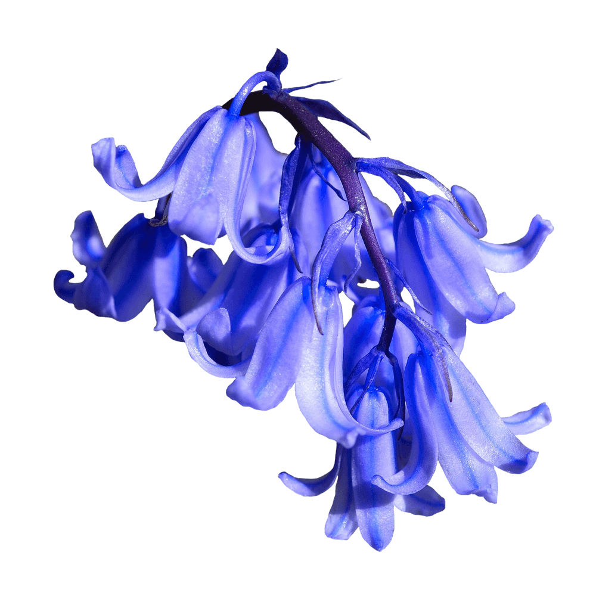

Baskervville is a revival of Jacob’s revival of Baskerville’s typeface. It was distributed by the Berger-Levrault Foundry. The font Jacob produced was sold as a Baskerwille.
The particularity of Jacob’s Baskerwille is that the roman is very close to Baskerville’s typefaces while the italic is closer to Didot’s typefaces.
Baskervville is designed by ANRT (Atelier National de Recherche typographique) students.
Font available from Google Fonts.
The UK is home to about half of the world’s Bluebell population. Bluebells are woodland plants but also grow in hedgerows and grassland. Bluebells are now protected from illegal commercial harvesting.
Bluebells flower in colours ranging from white (quite common), through to grey, pale blue, lilac to dark cobalt. There is also a variegated form with flowers that look as though they are white-bells dipped in blue water-colour paint.
In the Language of Flowers, Bluebells symbolises everlasting love and generation.